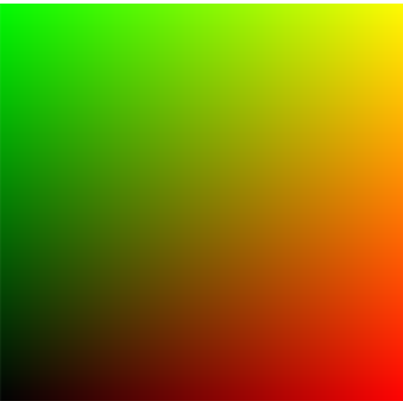

AVR requires WebGL and asks for context at the moment of initilization.
avr = new AVR.Context(document.getElementById('display'))
avr.loadPrograms({
// here comes your shaders
}, {
// shader constants here
}, function(p) {
// magic stuff goes here ...
});
Chains are computing flow. Each consists of one or more passes.
Example result:

// index.js
avr.loadPrograms({
hello: "shaders/hello.glsl"
}, {}, function(p) {
var c = avr.createChain();
avr.clear();
c.pass(p.hello);
});
// shaders/hello.glsl
precision mediump float;
varying vec2 index;
void main() { gl_FragColor = vec4(index, 0., 1.); }